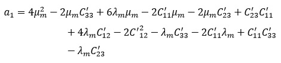

Datos de entrada con als propiedades de los amteriales para calcular las constantes ingenieriles.
| Propiedad mecánica de elasticidad | Símbolo | Valor | Unidad |
|---|---|---|---|
| Modulo de Young longitudinal FC | EfA | GPa | |
| Modulo de Young transversal FC | EfT | GPa | |
| Relación de Poisson longitudinal FC | νfA | --- | |
| Relación de Poisson transversal FC | νfT | --- | |
| Modulo de Corte longitudinal FC | GfA | GPa | |
| Modulo de Corte transversal FC | GfT | GPa | |
| Modulo de Young de la Matriz | Em | GPa | |
| Relación de Poisson de la Matriz | νm | --- |
Este es un modelo desarrollado por los investigadores Barbero y Luciano. A diferencia de los anteriores modelos, predice por si solo todos los módulos correspondientes a todos los coeficientes de la matriz de rigidez Cij. Para obtener los módulos E1, E2, ν12, G12, G23 y ν23 en necesario invertir la matriz de rigidez Cij, para así obtener los coeficientes de la matriz de flexibilidad Sij. Finalmente, haciendo unas operaciones sencillas, se obtienen las constantes ingenieriles mecánicas. Los fundamentos y suposiciones hechas en el modelo se pueden encontrar en el trabajo de Barbero y Luciano (Barbero, E. J. y Luciano, 1995). Las fórmulas involucradas en los cálculos son considerablemente más complicadas que en los anteriores modelos, y se presentan a continuación.
En primer lugar, se calculan las constantes de Lamé de la matriz. La definición formal de las constantes de Lamé μ y λ (Mu y Lambda). Las definiciones de las mismas se pueden ver en las referencias de Lurie y Ana María Monti (A. I. Lurie, 2005; Ana María Monti, 1997):
Luego el parámetro Δ(delta):
Seguidamente un conjunto de contantes C’ relacionados con los coeficientes de la matriz rigidez:


Hasta ahora, ninguno de los valores calculados, estaba relacionado con el volumen de fibra del compuesto. Los coeficientes s3, s6 y s7 son los que varían según la fracción del volumen de fibra:


Para la siguiente parte del calculo, se trabaja con los valores obtenidos de las Ecuaciones A.2.17 a A.2.25. Los coeficientes a1, a2, a3 y a4 se calculan como:



Acto seguido, se llega a unos coeficientes C*:


Y finalmente, relaciona los coeficientes C* con las constantes de la matriz rigidez Cij:


Invirtiendo la matriz rigidez Cij se obtiene la matriz flexibilidad Sij y finalmente se obtienen las constantes ingenieriles:


| Propiedad | Valor RM | Valor MMP | Unidades |
|---|---|---|---|
| Módulo Longitudinal RM: E1 | MPa | ||
| Módulo Transversal RM: E2 = E3 | MPa | ||
| Módulo de corte en el Plano RM: G12 = G13 | MPa | ||
| Módulo de corte fuera del plano RM: G23 | MPa | ||
| Relación de Poisson en el plano RM: ν12 = ν13 | --- | ||
| Relación de Poisson fuera del plano RM: ν23 | --- |
"""
Micromecanica para fibras Transversalmente Isotropicas
Constantes ingenieriles de la fibra y de la matriz:
Es conveniente definir las contantes ingenieriles tanto de la fibra como de la matriz:
"""
import numpy as np #Importamos el módulo NumPy, necesario para realizar algunas operaciones con matrices
#Modulo elástico de la fibra en direccion axial
E_f_A=239.4
#Modulo elástico de la fibra en direccion transversal
E_f_T=13
#Modulo elástico de la matriz
E_m=3.4
#Fracción en Volumen de la fibra
V_f=0.6
#Fracción en Volumen de la matriz
V_m=0.4
#Módulo de Poisson de la fibra en direccion axial
NU_f_A=0.47
#Módulo de Poisson de la fibra en direccion trasnversal
NU_f_T=0.17
#Módulo de Poisson de la matriz
NU_m=0.31
#Modulo de corte de la fibra en direccion axial
#G_f_A=E_f_A/(2*(1+NU_f_A))
G_f_A=45.4
#Modulo de corte de la fibra en direccion transversal
G_f_T=E_f_T/(2*(1+NU_f_T))
print(f'G_f_T: {G_f_T}') # G_f_T: 5.555555555555556
#Modulo de corte de la matriz
G_m=E_m/(2*(1+NU_m))
print(f'G_m: {G_m}') # G_m: 1.297709923664122
"""
Regla de las mezclas:
Los módulos se calculan de la siguiente manera:
"""
# Módulo Longitudinal:
E1_RM=E_m*V_m+V_f*E_f_A
print(f'E1_RM: {E1_RM}') # E1_RM: 145.0
# Módulo Transversal:
E2_RM=1/(V_m/E_m+V_f/E_f_A)
print(f'E2_RM: {E2_RM}') # E2_RM: 8.322699386503066
# Relacion de Poisson en el plano:
NU12_RM=NU_f_A*V_f+NU_m*V_m
print(f'NU12_RM: {NU12_RM}') # NU12_RM: 0.40599999999999997
# Módulo de corte en el Plano:
G12_RM=1/(V_m/G_m+V_f/G_f_A)
print(f'G12_RM: {G12_RM}') # G12_RM: 3.110892557719592
# Módulo de corte interlaminar:
G13_RM=G12_RM
print(f'G13_RM: {G13_RM}') # G13_RM: 3.110892557719592
# Módulo de corte interlaminar:
# Esta propiedad del material no se puede calcular con los supuestos iniciales de la regla de las mezclas. Para eso utilizamos otra teoría denominada técnica de parámetro semiempirico de partición de tensiones:
NU_4=(3-4*NU_m+G_m/G_f_A)/(4*(1-NU_m))
G23_RM=G_m*((V_f+NU_4*(1-V_f))/(NU_4*(1-V_f)+V_f*G_m/G_f_A))
print(f'G23_RM: {G23_RM}') # G23_RM: 4.034556648120423
# Relación de Poisson en el plano:
NU13_RM=NU12_RM
print(f'NU13_RM: {NU13_RM}') # NU13_RM: 0.40599999999999997
# Relación de Poisson fuera del plano:
NU23_RM=E2_RM/(2*G23_RM)-1
print(f'NU23_RM: {NU23_RM}') # NU23_RM: 0.03142676040753534
"""
Modelo de microestructura periodica
La micromecánica periódica de la microestructura (PMM: periodic microstructure micromechanics) produce predicciones precisas para todos los módulos (en plural) de un compuesto reforzado por fibras largas. Este modelo fue desarrollado por Barbero y Luciano (Luciano, R. and Barbero, E. J., ASME J. Appl. Mech. 62 (1995) 786 y Luciano, R. and Barbero, E. J., Int. J. Solids Struct. 31 (1994) 2933). A diferencia de la regla de las mezclas, el modelo por si solo predice propiedades Modulos de corte fuera del plano y las Relaciones de Poisson fuera del plano.
En general, las formulas son un tanto más complicadas, basandose en muchos casos en las constantes de Lamé.
"""
# Cálculo de constantes de Lamé:
LAMDA_m=(E_m*NU_m)/((1+NU_m)*(1-2*NU_m))
print(f'LAMDA_m: {LAMDA_m}') # LAMDA_m: 2.1173161912414624
MU_m=G_m
print(f'MU_m: {MU_m}') # MU_m: 1.297709923664122
# Constante delta:
DELTA=(1-2*NU_f_A**2*E_f_T/E_f_A-NU_f_T**2-2*NU_f_A**2*NU_f_T*E_f_T/E_f_A)/(E_f_A*E_f_T**2)
print(f'DELTA: {DELTA}') # DELTA: 2.3308536426858548e-05
# Constantes "C' (C prima)":
C1_11=(1-NU_f_T**2)/(E_f_T**2*DELTA)
print(f'C1_11: {C1_11}') # C1_11: 246.52572520737607
C1_22=(1-NU_f_A**2*E_f_T/E_f_A)/(E_f_A*E_f_T*DELTA)
print(f'C1_22: {C1_22}') # C1_22: 13.619979737737639
C1_33=C1_22
print(f'C1_33: {C1_33}') # C1_33: 13.619979737737639
C1_12=(NU_f_A*E_f_T/E_f_A+NU_f_A*NU_f_T*E_f_T/E_f_A)/(E_f_T**2*DELTA)
print(f'C1_12: {C1_12}') # C1_12: 7.580558731251158
C1_13=C1_12
print(f'C1_13: {C1_13}') # C1_13: 7.580558731251158
C1_23=(NU_f_T+NU_f_A**2*E_f_T/E_f_A)/(E_f_A*E_f_T*DELTA)
print(f'C1_23: {C1_23}') # C1_23: 2.508868626626529
C1_44=(C1_22-C1_23)/2
print(f'C1_44: {C1_44}') # C1_44: 5.555555555555555
C1_55=G_f_A
print(f'C1_55: {C1_55}') # C1_55: 45.4
C1_66=G_f_A
print(f'C1_66: {C1_66}') # C1_66: 45.4
# Coeficientes "S" que dependen del volumen de fibra:
s3=0.49247-0.47603*V_f-0.02748*V_f**2
print(f's3: {s3}') # s3: 0.19695920000000003
s6=0.36844-0.14944*V_f-0.27152*V_f**2
print(f's6: {s6}') # s6: 0.18102880000000005
s7=0.12346-0.32035*V_f+0.23517*V_f**2
print(f's7: {s7}') # s7: 0.015911199999999973
# Coeficientes "a":
a_1=4*MU_m**2-2*MU_m*C1_33+6*LAMDA_m*MU_m-2*C1_11*MU_m-2*MU_m*C1_23+C1_23*C1_11+4*LAMDA_m*C1_12-2*C1_12**2-LAMDA_m*C1_33-2*C1_11*LAMDA_m+C1_11*C1_33-LAMDA_m*C1_23
print(f'a_1: {a_1}') # a_1: 2188.875650865659
a_2=8*MU_m**3-8*MU_m**2*C1_33+12*MU_m**2*LAMDA_m-4*MU_m**2*C1_11-2*MU_m*C1_23**2+4*MU_m*LAMDA_m*C1_23+4*MU_m*C1_11*C1_33-8*MU_m*LAMDA_m*C1_33-4*MU_m*C1_12**2+2*MU_m*C1_33**2-4*MU_m*LAMDA_m*C1_11+8*MU_m*LAMDA_m*C1_12+2*LAMDA_m*C1_11*C1_33+4*LAMDA_m*C1_12*C1_23-4*LAMDA_m*C1_12*C1_33-2*LAMDA_m*C1_11*C1_23-2*C1_23*C1_12**2+C1_23**2*C1_11+2*C1_33*C1_12**2-C1_11*C1_33**2+LAMDA_m*C1_33**2-LAMDA_m*C1_23**2
print(f'a_2: {a_2}') # a_2: -18639.789257583736
a_3=(4*MU_m**2+4*LAMDA_m*MU_m-2*C1_11*MU_m-2*C1_33*MU_m-C1_11*LAMDA_m-C1_33*LAMDA_m-C1_12**2)/a_2+(C1_11*C1_33+2*LAMDA_m*C1_12)/a_2-(s3-s6/(2-2*NU_m))/MU_m
print(f'a_3: {a_3}') # a_3: -0.16464039740014957
a_4=(-2*MU_m*C1_23+2*LAMDA_m*MU_m-LAMDA_m*C1_23-C1_11*LAMDA_m-C1_12**2+2*LAMDA_m*C1_12+C1_11*C1_23)/a_2+s7/(MU_m*(2-2*NU_m))
print(f'a_4: {a_4}') # a_4: 0.005406434901024193
# Coeficientes "C*" (C asterisco):
C2_11=LAMDA_m+2*MU_m-V_f*(-a_4**2+a_3**2)*(1/((-(2*MU_m+2*LAMDA_m-C1_33-C1_23)*(a_4**2-a_3**2)/a_1)+(2*(a_4-a_3)*((LAMDA_m-C1_12)**2))/(a_1**2)))
print(f'C2_11: {C2_11}') # C2_11: 148.59892890919969
C2_12=LAMDA_m+V_f*((LAMDA_m-C1_12)*(a_4-a_3)/a_1)*(1/(((2*MU_m+2*LAMDA_m-C1_33-C1_23)*(a_3**2+a_4**2)/a_1)+(2*(a_4-a_3)*((LAMDA_m-C1_12)**2)/a_1**2)))
print(f'C2_12: {C2_12}') # C2_12: 4.367710571297936
C2_22=LAMDA_m+2*MU_m-V_f*((2*MU_m+2*LAMDA_m-C1_33-C1_23)*a_3/a_1-((LAMDA_m-C1_12)**2)/a_1**2)*(1/((2*MU_m+2*LAMDA_m-C1_33-C1_23)*(a_3**2-a_4**2)/a_1+2*(a_4-a_3)*((LAMDA_m-C1_12)**2)/a_1**2))
print(f'C2_22: {C2_22}') # C2_22: 8.39632748492895
C2_23=LAMDA_m+V_f*((2*MU_m+2*LAMDA_m-C1_33-C1_23)*a_4/a_1-((LAMDA_m-C1_12)**2)/a_1**2)*(1/((2*MU_m+2*LAMDA_m-C1_33-C1_23)*(a_3**2-a_4**2)/a_1+2*(a_4-a_3)*((LAMDA_m-C1_12)**2)/a_1**2))
print(f'C2_23: {C2_23}') # C2_23: 2.272467902026411
C2_44=MU_m-V_f/((2/(2*MU_m-C1_22+C1_23))-(2*s3-4*s7/(2-2*NU_m))/MU_m)
print(f'C2_44: {C2_44}') # C2_44: 2.490860381490802
C2_66=MU_m-V_f/(1/(MU_m-C1_66)-s3/MU_m)
print(f'C2_66: {C2_66}') # C2_66: 4.737110514438011
# Constantes de la matriz rigidez:
# # Finalmente, relaciona los coeficientes C* con las constantes de la matriz rigidez Cij:
C_11=C2_11
print(f'C_11: {C_11}') # C_11: 148.59892890919969
C_12=C2_12
print(f'C_12: {C_12}') # C_12: 4.367710571297936
C_13=C2_12
print(f'C_13: {C_13}') # C_13: 4.367710571297936
C_22=3*C2_22/4+C2_23/4+C2_44/4
print(f'C_22: {C_22}') # C_22: 7.488077684576015
C_33=C_22
print(f'C_33: {C_33}') # C_33: 7.488077684576015
C_23=C2_22/4+3*C2_23/4-C2_44/4
print(f'C_23: {C_23}') # C_23: 3.1807177023793454
C_44=C2_44
print(f'C_44: {C_44}') # C_44: 2.490860381490802
C_55=C2_66
print(f'C_55: {C_55}') # C_55: 4.737110514438011
C_66=C_55
print(f'C_66: {C_66}') # C_66: 4.737110514438011
"""
Constantes ingenieriles:
Inviertiendo la matriz rigidez Cij se obtiene la matriz flexibilidad Sij y finalmente se obtienen las constantes ingenieriles. Acordarse que una lámina sola es un material "trasnversalmente isotrópico", cuya matriz se muestra a continuación:
"""
# Los pasos para calcular las contantes ingenieriles se muestran a continuacion:
# Se crea una matriz de ceros correspondiente a la matriz rigidez.
import numpy as np
Cij = np.zeros((6, 6))
print(f'Cij={Cij}')
# Cij=[[0. 0. 0. 0. 0. 0.]
# [0. 0. 0. 0. 0. 0.]
# [0. 0. 0. 0. 0. 0.]
# [0. 0. 0. 0. 0. 0.]
# [0. 0. 0. 0. 0. 0.]
# [0. 0. 0. 0. 0. 0.]]
# Dado que la mayoria de los componentes de la matriz son ceros, conviene arrancar deficiendo la matriz de este modo para luego reasignar convenientemente el valor de algunos elementos de la matriz, de acurdo a la definicion vista en la figura.
Cij[0,0]=C_11
Cij[0,1]=C_12
Cij[0,2]=C_13
Cij[1,0]=C_12
Cij[1,1]=C_22
Cij[1,2]=C_23
Cij[2,0]=C_13
Cij[2,1]=C_23
Cij[2,2]=C_33
Cij[3,3]=C_44
Cij[4,4]=C_55
Cij[5,5]=C_66
print(f'Cij={Cij}')
# Cij=[ [148.59892891 4.36771057 4.36771057 0. 0. 0. ]
# [ 4.36771057 7.48807768 3.1807177 0. 0. 0. ]
# [ 4.36771057 3.1807177 7.48807768 0. 0. 0. ]
# [ 0. 0. 0. 2.49086038 0. 0. ]
# [ 0. 0. 0. 0. 4.73711051 0. ]
# [ 0. 0. 0. 0. 0. 4.73711051]]
#Cálculamos la matriz inversa de la matriz rigidez Cij que es la matriz flexibilidad Sij:
Sij=np.linalg.inv(Cij)
print(f'Sij={Sij}')
# Sij=[[ 0.00689547 -0.00282294 -0.00282294 0. 0. 0. ]
# [-0.00282294 0.16410172 -0.06805905 0. 0. 0. ]
# [-0.00282294 -0.06805905 0.16410172 0. 0. 0. ]
# [ 0. 0. 0. 0.4014677 0. 0. ]
# [ 0. 0. 0. 0. 0.21109915 0. ]
# [ 0. 0. 0. 0. 0. 0.21109915]]
#Extraemos las contantes ingenieriles a partir de la matriz flexibilidad:
E1_PMM=1/Sij[0,0]
print(f'E1_PMM={E1_PMM}') # E1_PMM=145.02272467194285
E2_PMM=1/Sij[1,1]
print(f'E2_PMM={E2_PMM}') # E2_PMM=6.093781356982806
NU12_PMM=-Sij[1,0]/Sij[0,0]
print(f'NU12_PMM={NU12_PMM}') # NU12_PMM=0.40939116487680455
NU13_PMM=NU12_PMM
print(f'NU13_PMM={NU13_PMM}') # NU13_PMM=0.40939116487680455
NU23_PMM=-Sij[2,1]/Sij[1,1]
print(f'NU23_PMM={NU23_PMM}') # NU23_PMM=0.41473695771187835
G12_PMM=1/Sij[4,4]
print(f'G12_PMM={G12_PMM}') # G12_PMM=4.737110514438011
G13_PMM=G12_PMM
print(f'G13_PMM={G13_PMM}') # G13_PMM=4.737110514438011
G23_PMM=1/Sij[3,3]
print(f'G23_PMM={G23_PMM}') # G23_PMM=2.490860381490802
'##################################################################
'Regla de las mezclas:
'##################################################################
Private Sub calcular_RM_Click()
'##################################################################
'Declaracion de variables: Propiedades de tablas, bibliografía, etc. que definen al resto:
'Dim var_E_f_A As Range
'Dim var_E_m As Range
'Dim var_V_f As Range
'Dim var_V_m As Range
'Dim var_NU_f_A As Range
'Dim var_NU_m As Range
'Dim var_G_f_A As Range
'##################################################################
'Declaracion de variables: Módulos pertenecientes a la Regla de las mezclas (RM:
Dim var_E1_RM As Range
Dim var_E2_RM As Range
Dim var_NU12_RM As Range
Dim var_G12_RM As Range
Dim var_G13_RM As Range
Dim var_G23_RM As Range
Dim var_NU13_RM As Range
Dim var_NU23_RM As Range
'##################################################################
'Declaracion de variables: Variables de los calculos en las funciones (números de coma flotante dentro de la funcion de calculo de la MACRO):
Dim E1_RM As Double
Dim E2_RM As Double
Dim NU12_RM As Double
Dim G12_RM As Double
Dim G13_RM As Double
Dim G23_RM As Double
Dim NU13_RM As Double
Dim NU23_RM As Double
Dim NU_4 As Double
'##################################################################
'##################################################################
'##################################################################
'Relacionamos las variables con los marcadores de la tabla del documento Word:
Set var_E1_RM = ActiveDocument.Bookmarks("RM_E_1").Range
Set var_E2_RM = ActiveDocument.Bookmarks("RM_E_2").Range
Set var_NU12_RM = ActiveDocument.Bookmarks("RM_NU_12").Range
Set var_G12_RM = ActiveDocument.Bookmarks("RM_G_12").Range
Set var_G13_RM = ActiveDocument.Bookmarks("RM_G_13").Range
Set var_G23_RM = ActiveDocument.Bookmarks("RM_G_23").Range
Set var_NU13_RM = ActiveDocument.Bookmarks("RM_NU_13").Range
Set var_NU23_RM = ActiveDocument.Bookmarks("RM_NU_23").Range
'##################################################################
'##################################################################
'##################################################################
'Cálculo del resto de las variables a partir de las constantes
'Cálculo del Modulo de corte de la matriz
G_m = (Val(txt_E_m.Value)) / (2 * (1 + (Val(txt_NU_m.Value))))
'Cálculo del Módulo Longitudinal:
E1_RM = (Val(txt_E_m.Value)) * (Val(txt_V_m.Value)) + (Val(txt_V_f.Value)) * (Val(txt_E_f_A.Value))
'Cálculo del Módulo Transversal:
E2_RM = 1 / ((Val(txt_V_m.Value)) / (Val(txt_E_m.Value)) + (Val(txt_V_f.Value)) / (Val(txt_E_f_A.Value)))
'Cálculo del la Relacion de Poisson en el plano:
NU12_RM = (Val(txt_NU_f_A.Value)) * (Val(txt_V_f.Value)) + (Val(txt_NU_m.Value)) * (Val(txt_V_m.Value))
'Cálculo del Módulo de corte en el Plano:
G12_RM = 1 / ((Val(txt_V_m.Value)) / (G_m) + (Val(txt_V_f.Value)) / (Val(txt_G_f_A.Value)))
'Cálculo del Módulo de corte interlaminar:
G13_RM = G12_RM
'Cálculo del Módulo de corte fuera del plano RM:
NU_4 = (3 - 4 * (Val(txt_NU_m.Value)) + (G_m) / (Val(txt_G_f_A.Value))) / (4 * (1 - (Val(txt_NU_m.Value))))
G23_RM = (G_m) * (((Val(txt_V_f.Value)) + NU_4 * (1 - (Val(txt_V_f.Value)))) / (NU_4 * (1 - (Val(txt_V_f.Value))) + (Val(txt_V_f.Value)) * (G_m) / (Val(txt_G_f_A.Value))))
'Cálculo de la Relación de Poisson en el plano:
NU13_RM = NU12_RM
'Cálculo de la Relación de Poisson fuera del plano:
NU23_RM = E2_RM / (2 * G23_RM) - 1
'Relacionamos las variables calculadas con el respectivo campo del formulario:
txt_E1_RM.Caption = Format(E1_RM, "0.000000000000000")
txt_E2_RM.Caption = Format(E2_RM, "0.000000000000000")
txt_NU12_RM.Caption = Format(NU12_RM, "0.000000000000000")
txt_G12_RM.Caption = Format(G12_RM, "0.000000000000000")
txt_G13_RM.Caption = Format(G13_RM, "0.000000000000000")
txt_G23_RM.Caption = Format(G23_RM, "0.000000000000000")
txt_NU13_RM.Caption = Format(NU13_RM, "0.000000000000000")
txt_NU23_RM.Caption = Format(NU23_RM, "0.000000000000000")
'Relacionamos las variables calculadas con las variables de los marcadores del documento Word:
var_E1_RM = Format(E1_RM, "0.000000000000000")
var_E2_RM = Format(E2_RM, "0.000000000000000")
var_NU12_RM = Format(NU12_RM, "0.000000000000000")
var_G12_RM = Format(G12_RM, "0.000000000000000")
var_G13_RM = Format(G13_RM, "0.000000000000000")
var_G23_RM = Format(G23_RM, "0.000000000000000")
var_NU13_RM = Format(NU13_RM, "0.000000000000000")
var_NU23_RM = Format(NU23_RM, "0.000000000000000")
End Sub
Private Sub limpiar_Click()
Me.txt_E1_RM = Empty
Me.txt_E2_RM = Empty
Me.txt_NU12_RM = Empty
Me.txt_G12_RM = Empty
Me.txt_G13_RM = Empty
Me.txt_G23_RM = Empty
Me.txt_NU13_RM = Empty
Me.txt_NU23_RM = Empty
End Sub
'##################################################################
'Modelo de la microestructura periódica:
'##################################################################
Private Sub calcular_RM_Click()
'##################################################################
'Definimos las variables de entrada
Dim E_f_A_MMP As Double
Dim E_f_T_MMP As Double
Dim G_f_A_MMP As Double
Dim G_f_T_MMP As Double
Dim NU_f_A_MMP As Double
Dim NU_f_T_MMP As Double
Dim E_m_MMP As Double
Dim NU_m_MMP As Double
Dim V_f_MMP As Double
Dim V_m_MMP As Double
'Las igualamos a los textos de los campos del formulario
E_f_A_MMP = (Val(txt_E_f_A_MMP.Value))
E_f_T_MMP = (Val(txt_E_f_T_MMP.Value))
G_f_A_MMP = (Val(txt_G_f_A_MMP.Value))
G_f_T_MMP = (Val(txt_G_f_T_MMP.Value))
NU_f_A_MMP = (Val(txt_NU_f_A_MMP.Value))
NU_f_T_MMP = (Val(txt_NU_f_T_MMP.Value))
E_m_MMP = (Val(txt_E_m_MMP.Value))
NU_m_MMP = (Val(txt_NU_m_MMP.Value))
V_f_MMP = (Val(txt_V_f_MMP.Value))
V_m_MMP = (Val(txt_V_m_MMP.Value))
'Propiedades de materiales calculadas a partir de las variables anteriores
Dim G_m_MMP As Double
Dim LAMDA_m As Double
Dim MU_m As Double
Dim DELTA As Double
'##################################################################
'Constantes C'
Dim C1_11 As Double
Dim C1_22 As Double
Dim C1_33 As Double
Dim C1_12 As Double
Dim C1_13 As Double
Dim C1_23 As Double
Dim C1_44 As Double
Dim C1_55 As Double
Dim C1_66 As Double
'Constantes s
Dim s3 As Double
Dim s6 As Double
Dim s7 As Double
'Constantes a
Dim a_1 As Double
Dim a_2 As Double
Dim a_3 As Double
Dim a_4 As Double
'Constantes C*
Dim C2_11 As Double
Dim C2_22 As Double
Dim C2_12 As Double
Dim C2_23 As Double
Dim C2_44 As Double
Dim C2_66 As Double
'##################################################################
' Constantes de la matriz rigidez:
Dim C_11 As Double
Dim C_22 As Double
Dim C_33 As Double
Dim C_12 As Double
Dim C_13 As Double
Dim C_23 As Double
Dim C_44 As Double
Dim C_55 As Double
Dim C_66 As Double
'Matriz rigidez:
Dim matriz_rigidez(1 To 6, 1 To 6) As Double
Dim contenidoMatriz As String
'##################################################################
' Constantes de la matriz flexibilidad:
Dim S_11 As Double
Dim S_22 As Double
Dim S_33 As Double
Dim S_12 As Double
Dim S_13 As Double
Dim S_23 As Double
Dim S_44 As Double
Dim S_55 As Double
Dim S_66 As Double
'##################################################################
' Constantes ingenieriles:
Dim E1_MMP As Double
Dim E2_MMP As Double
Dim NU12_MMP As Double
Dim G12_MMP As Double
Dim G13_MMP As Double
Dim G23_MMP As Double
Dim NU13_MMP As Double
Dim NU23_MMP As Double
Dim var_E1_MMP As Range
Dim var_E2_MMP As Range
Dim var_NU12_MMP As Range
Dim var_G12_MMP As Range
Dim var_G13_MMP As Range
Dim var_G23_MMP As Range
Dim var_NU13_MMP As Range
Dim var_NU23_MMP As Range
'##################################################################
'##################################################################
'##################################################################
'Cálculo del Modulo de corte de la matriz
G_m_MMP = E_m_MMP / (2 * (1 + NU_m_MMP))
' Cálculo de constantes de Lamé:
LAMDA_m = (E_m_MMP * NU_m_MMP) / ((1 + NU_m_MMP) * (1 - 2 * NU_m_MMP))
txt_LAMDA_m.Caption = Format(LAMDA_m, "0.000000000000000")
MU_m = G_m_MMP
txt_MU_m.Caption = Format(MU_m, "0.000000000000000")
' Constante delta:
DELTA = (1 - 2 * NU_f_A_MMP ^ 2 * E_f_T_MMP / E_f_A_MMP - NU_f_T_MMP ^ 2 - 2 * NU_f_A_MMP ^ 2 * NU_f_T_MMP * E_f_T_MMP / E_f_A_MMP) / (E_f_A_MMP * E_f_T_MMP ^ 2)
txt_DELTA.Caption = Format(DELTA, "0.000000000000000")
'##################################################################
'##################################################################
'##################################################################
' Constantes "C' (C prima)":
C1_11 = (1 - NU_f_T_MMP ^ 2) / (E_f_T_MMP ^ 2 * DELTA)
txt_C1_11.Caption = Format(C1_11, "0.000000000000000")
C1_22 = (1 - NU_f_A_MMP ^ 2 * E_f_T_MMP / E_f_A_MMP) / (E_f_A_MMP * E_f_T_MMP * DELTA)
txt_C1_22.Caption = Format(C1_22, "0.000000000000000")
C1_33 = C1_22
C1_12 = (NU_f_A_MMP * E_f_T_MMP / E_f_A_MMP + NU_f_A_MMP * NU_f_T_MMP * E_f_T_MMP / E_f_A_MMP) / (E_f_T_MMP ^ 2 * DELTA)
txt_C1_12.Caption = Format(C1_12, "0.000000000000000")
C1_13 = C1_12
C1_23 = (NU_f_T_MMP + NU_f_A_MMP ^ 2 * E_f_T_MMP / E_f_A_MMP) / (E_f_A_MMP * E_f_T_MMP * DELTA)
txt_C1_23.Caption = Format(C1_23, "0.000000000000000")
C1_44 = (C1_22 - C1_23) / 2
txt_C1_44.Caption = Format(C1_44, "0.000000000000000")
C1_55 = G_f_A_MMP
txt_C1_55.Caption = Format(C1_55, "0.000000000000000")
C1_66 = G_f_A_MMP
' Coeficientes "S" que dependen del volumen de fibra:
s3 = 0.49247 - 0.47603 * V_f_MMP - 0.02748 * V_f_MMP ^ 2
txt_s3.Caption = Format(s3, "0.000000000000000")
s6 = 0.36844 - 0.14944 * V_f_MMP - 0.27152 * V_f_MMP ^ 2
txt_s6.Caption = Format(s6, "0.000000000000000")
s7 = 0.12346 - 0.32035 * V_f_MMP + 0.23517 * V_f_MMP ^ 2
txt_s7.Caption = Format(s7, "0.000000000000000")
' Coeficientes "a":
a_1 = 4 * MU_m ^ 2 - 2 * MU_m * C1_33 + 6 * LAMDA_m * MU_m - 2 * C1_11 * MU_m - 2 * MU_m * C1_23 + C1_23 * C1_11 + 4 * LAMDA_m * C1_12 - 2 * C1_12 ^ 2 - LAMDA_m * C1_33 - 2 * C1_11 * LAMDA_m + C1_11 * C1_33 - LAMDA_m * C1_23
txt_a_1.Caption = Format(a_1, "0.000000000000000")
a_2 = 8 * MU_m ^ 3 - 8 * MU_m ^ 2 * C1_33 + 12 * MU_m ^ 2 * LAMDA_m - 4 * MU_m ^ 2 * C1_11 - 2 * MU_m * C1_23 ^ 2 + 4 * MU_m * LAMDA_m * C1_23 + 4 * MU_m * C1_11 * C1_33 - 8 * MU_m * LAMDA_m * C1_33 - 4 * MU_m * C1_12 ^ 2 + 2 * MU_m * C1_33 ^ 2 - 4 * MU_m * LAMDA_m * C1_11 + 8 * MU_m * LAMDA_m * C1_12 + 2 * LAMDA_m * C1_11 * C1_33 + 4 * LAMDA_m * C1_12 * C1_23 - 4 * LAMDA_m * C1_12 * C1_33 - 2 * LAMDA_m * C1_11 * C1_23 - 2 * C1_23 * C1_12 ^ 2 + C1_23 ^ 2 * C1_11 + 2 * C1_33 * C1_12 ^ 2 - C1_11 * C1_33 ^ 2 + LAMDA_m * C1_33 ^ 2 - LAMDA_m * C1_23 ^ 2
txt_a_2.Caption = Format(a_2, "0.000000000000000")
a_3 = (4 * MU_m ^ 2 + 4 * LAMDA_m * MU_m - 2 * C1_11 * MU_m - 2 * C1_33 * MU_m - C1_11 * LAMDA_m - C1_33 * LAMDA_m - C1_12 ^ 2) / a_2 + (C1_11 * C1_33 + 2 * LAMDA_m * C1_12) / a_2 - (s3 - s6 / (2 - 2 * NU_m_MMP)) / MU_m
txt_a_3.Caption = Format(a_3, "0.000000000000000")
a_4 = (-2 * MU_m * C1_23 + 2 * LAMDA_m * MU_m - LAMDA_m * C1_23 - C1_11 * LAMDA_m - C1_12 ^ 2 + 2 * LAMDA_m * C1_12 + C1_11 * C1_23) / a_2 + s7 / (MU_m * (2 - 2 * NU_m_MMP))
txt_a_4.Caption = Format(a_4, "0.000000000000000")
' Coeficientes "C*" (C asterisco):
C2_11 = LAMDA_m + 2 * MU_m - V_f_MMP * (-a_4 ^ 2 + a_3 ^ 2) * (1 / ((-(2 * MU_m + 2 * LAMDA_m - C1_33 - C1_23) * (a_4 ^ 2 - a_3 ^ 2) / a_1) + (2 * (a_4 - a_3) * ((LAMDA_m - C1_12) ^ 2)) / (a_1 ^ 2)))
txt_C2_11.Caption = Format(C2_11, "0.000000000000000")
C2_12 = LAMDA_m + V_f_MMP * ((LAMDA_m - C1_12) * (a_4 - a_3) / a_1) * (1 / (((2 * MU_m + 2 * LAMDA_m - C1_33 - C1_23) * (a_3 ^ 2 + a_4 ^ 2) / a_1) + (2 * (a_4 - a_3) * ((LAMDA_m - C1_12) ^ 2) / a_1 ^ 2)))
txt_C2_12.Caption = Format(C2_12, "0.000000000000000")
C2_22 = LAMDA_m + 2 * MU_m - V_f_MMP * ((2 * MU_m + 2 * LAMDA_m - C1_33 - C1_23) * a_3 / a_1 - ((LAMDA_m - C1_12) ^ 2) / a_1 ^ 2) * (1 / ((2 * MU_m + 2 * LAMDA_m - C1_33 - C1_23) * (a_3 ^ 2 - a_4 ^ 2) / a_1 + 2 * (a_4 - a_3) * ((LAMDA_m - C1_12) ^ 2) / a_1 ^ 2))
txt_C2_22.Caption = Format(C2_22, "0.000000000000000")
C2_23 = LAMDA_m + V_f_MMP * ((2 * MU_m + 2 * LAMDA_m - C1_33 - C1_23) * a_4 / a_1 - ((LAMDA_m - C1_12) ^ 2) / a_1 ^ 2) * (1 / ((2 * MU_m + 2 * LAMDA_m - C1_33 - C1_23) * (a_3 ^ 2 - a_4 ^ 2) / a_1 + 2 * (a_4 - a_3) * ((LAMDA_m - C1_12) ^ 2) / a_1 ^ 2))
txt_C2_23.Caption = Format(C2_23, "0.000000000000000")
C2_44 = MU_m - V_f_MMP / ((2 / (2 * MU_m - C1_22 + C1_23)) - (2 * s3 - 4 * s7 / (2 - 2 * NU_m_MMP)) / MU_m)
txt_C2_44.Caption = Format(C2_44, "0.000000000000000")
C2_66 = MU_m - V_f_MMP / (1 / (MU_m - C1_66) - s3 / MU_m)
txt_C2_66.Caption = Format(C2_66, "0.000000000000000")
'##################################################################
'##################################################################
'##################################################################
' Constantes de la matriz rigidez:
' # Finalmente, relaciona los coeficientes C* con las constantes de la matriz rigidez Cij:
C_11 = C2_11
txt_C_11.Caption = Format(C_11, "0.000000000000000")
txt_m_C_11.Caption = Format(C_11, "0.000000000000000")
C_12 = C2_12
txt_C_12.Caption = Format(C_12, "0.000000000000000")
txt_m_C_12.Caption = Format(C_12, "0.000000000000000")
txt_m_C_21.Caption = Format(C_12, "0.000000000000000")
txt_m_C_13.Caption = Format(C_12, "0.000000000000000")
txt_m_C_31.Caption = Format(C_12, "0.000000000000000")
C_13 = C2_12
C_22 = 3 * C2_22 / 4 + C2_23 / 4 + C2_44 / 4
txt_C_22.Caption = Format(C_22, "0.000000000000000")
txt_m_C_22.Caption = Format(C_22, "0.000000000000000")
txt_m_C_33.Caption = Format(C_22, "0.000000000000000")
C_33 = C_22
C_23 = C2_22 / 4 + 3 * C2_23 / 4 - C2_44 / 4
txt_C_23.Caption = Format(C_23, "0.000000000000000")
txt_m_C_23.Caption = Format(C_23, "0.000000000000000")
txt_m_C_32.Caption = Format(C_23, "0.000000000000000")
C_44 = C2_44
txt_C_44.Caption = Format(C_44, "0.000000000000000")
txt_m_C_44.Caption = Format(C_44, "0.000000000000000")
C_55 = C2_66
txt_C_55.Caption = Format(C_55, "0.000000000000000")
txt_m_C_55.Caption = Format(C_55, "0.000000000000000")
txt_m_C_66.Caption = Format(C_55, "0.000000000000000")
C_66 = C_55
'##################################################################
'##################################################################
'##################################################################
'Reemplazamos los valores de la matriz anterior por los coeficientes calculados anteriormente:
matriz_rigidez(1, 1) = C_11
matriz_rigidez(1, 2) = C_12
matriz_rigidez(1, 3) = C_13
matriz_rigidez(2, 1) = C_12
matriz_rigidez(2, 2) = C_22
matriz_rigidez(2, 3) = C_23
matriz_rigidez(3, 1) = C_13
matriz_rigidez(3, 2) = C_23
matriz_rigidez(3, 3) = C_33
matriz_rigidez(4, 4) = C_44
matriz_rigidez(5, 5) = C_55
matriz_rigidez(6, 6) = C_66
contenidoMatriz = ""
' Recorremos la matriz y concatenamos los elementos en la variable
For i = 1 To 6
For j = 1 To 6
contenidoMatriz = contenidoMatriz & matriz_rigidez(i, j) & vbTab ' Usamos vbTab para separar los elementos con una tabulación
Next j
contenidoMatriz = contenidoMatriz & vbCrLf ' Usamos vbCrLf para agregar un salto de línea después de cada fila
Next i
Dim n As Integer
n = UBound(matriz_rigidez, 1)
' Inicializar las matrices L y U
Dim L() As Double
Dim U() As Double
ReDim L(1 To n, 1 To n)
ReDim U(1 To n, 1 To n)
' Realizar la descomposición LU
Dim ii As Integer, jj As Integer, k As Integer
For ii = 1 To n
L(ii, ii) = 1
For jj = ii To n
Dim sum As Double
sum = 0
For k = 1 To ii - 1
sum = sum + L(ii, k) * U(k, jj)
Next k
U(ii, jj) = matriz_rigidez(ii, jj) - sum
Next jj
For jj = ii + 1 To n
Dim suma As Double
suma = 0
For k = 1 To ii - 1
suma = suma + L(jj, k) * U(k, ii)
Next k
L(jj, ii) = (matriz_rigidez(jj, ii) - suma) / U(ii, ii)
Next jj
Next ii
' Ahora que tenemos L y U, podemos encontrar la matriz inversa utilizando la descomposición LU
Dim matriz_identidad() As Double
ReDim matriz_identidad(1 To n, 1 To n)
For ii = 1 To n
For jj = 1 To n
matriz_identidad(ii, jj) = IIf(ii = jj, 1, 0)
Next jj
Next ii
Dim matriz_flexibilidad() As Double
ReDim matriz_flexibilidad(1 To n, 1 To n)
' Resolver para cada columna de la matriz identidad
For k = 1 To n
Dim y() As Double
ReDim y(1 To n, 1 To 1)
For ii = 1 To n
y(ii, 1) = matriz_identidad(ii, k)
For jj = 1 To ii - 1
y(ii, 1) = y(ii, 1) - L(ii, jj) * y(jj, 1)
Next jj
Next ii
For ii = n To 1 Step -1
matriz_flexibilidad(ii, k) = y(ii, 1)
For jj = ii + 1 To n
matriz_flexibilidad(ii, k) = matriz_flexibilidad(ii, k) - U(ii, jj) * matriz_flexibilidad(jj, k)
Next jj
matriz_flexibilidad(ii, k) = matriz_flexibilidad(ii, k) / U(ii, ii)
Next ii
Next k
Dim contenidoMatriz2 As String
contenidoMatriz2 = ""
' Recorremos la matriz y concatenamos los elementos en la variable
For ii = 1 To 6
For jj = 1 To 6
contenidoMatriz2 = contenidoMatriz2 & matriz_flexibilidad(ii, jj) & vbTab ' Usamos vbTab para separar los elementos con una tabulación
Next jj
contenidoMatriz2 = contenidoMatriz2 & vbCrLf ' Usamos vbCrLf para agregar un salto de línea después de cada fila
Next ii
'##################################################################
'##################################################################
'##################################################################
S_11 = matriz_flexibilidad(1, 1)
txt_S_11.Caption = Format(S_11, "0.000000000000000")
txt_m_S_11.Caption = Format(S_11, "0.000000000000000")
S_12 = matriz_flexibilidad(1, 2)
S_13 = S_12
txt_S_12.Caption = Format(S_12, "0.000000000000000")
txt_m_S_12.Caption = Format(S_12, "0.000000000000000")
txt_m_S_21.Caption = Format(S_12, "0.000000000000000")
txt_m_S_13.Caption = Format(S_12, "0.000000000000000")
txt_m_S_31.Caption = Format(S_12, "0.000000000000000")
S_22 = matriz_flexibilidad(2, 2)
S_33 = S_22
txt_S_22.Caption = Format(S_22, "0.000000000000000")
txt_m_S_22.Caption = Format(S_22, "0.000000000000000")
txt_m_S_33.Caption = Format(S_22, "0.000000000000000")
S_23 = matriz_flexibilidad(2, 3)
txt_S_23.Caption = Format(S_23, "0.000000000000000")
txt_m_S_23.Caption = Format(S_23, "0.000000000000000")
txt_m_S_32.Caption = Format(S_23, "0.000000000000000")
S_44 = matriz_flexibilidad(4, 4)
txt_S_44.Caption = Format(S_44, "0.000000000000000")
txt_m_S_44.Caption = Format(S_44, "0.000000000000000")
S_55 = matriz_flexibilidad(5, 5)
S_66 = matriz_flexibilidad(6, 6)
txt_S_55.Caption = Format(S_55, "0.000000000000000")
txt_m_S_55.Caption = Format(S_55, "0.000000000000000")
txt_m_S_66.Caption = Format(S_55, "0.000000000000000")
'##################################################################
'##################################################################
'##################################################################
'Cálculo del Módulo Longitudinal:
E1_MMP = 1 / matriz_flexibilidad(1, 1)
'Cálculo del Módulo Transversal:
E2_MMP = 1 / matriz_flexibilidad(2, 2)
'Cálculo del la Relacion de Poisson en el plano:
NU12_MMP = -matriz_flexibilidad(2, 1) / matriz_flexibilidad(1, 1)
'Cálculo del Módulo de corte en el Plano:
G12_MMP = 1 / matriz_flexibilidad(5, 5)
'Cálculo del Módulo de corte interlaminar:
G13_MMP = G12_MMP
'Cálculo del Módulo de corte fuera del plano MMP:
G23_MMP = 1 / matriz_flexibilidad(4, 4)
'Cálculo de la Relación de Poisson en el plano:
NU13_MMP = NU12_MMP
'Cálculo de la Relación de Poisson fuera del plano:
NU23_MMP = -matriz_flexibilidad(3, 2) / matriz_flexibilidad(2, 2)
'Relacionamos las variables con los marcadores de la tabla del documento Word:
Set var_E1_MMP = ActiveDocument.Bookmarks("MMP_E_1").Range
Set var_E2_MMP = ActiveDocument.Bookmarks("MMP_E_2").Range
Set var_NU12_MMP = ActiveDocument.Bookmarks("MMP_NU_12").Range
Set var_G12_MMP = ActiveDocument.Bookmarks("MMP_G_12").Range
Set var_G13_MMP = ActiveDocument.Bookmarks("MMP_G_13").Range
Set var_G23_MMP = ActiveDocument.Bookmarks("MMP_G_23").Range
Set var_NU13_MMP = ActiveDocument.Bookmarks("MMP_NU_13").Range
Set var_NU23_MMP = ActiveDocument.Bookmarks("MMP_NU_23").Range
'Relacionamos las variables calculadas con el respectivo campo del formulario:
txt_E1_MMP.Caption = Format(E1_MMP, "0.000000000000000")
txt_E2_MMP.Caption = Format(E2_MMP, "0.000000000000000")
txt_NU12_MMP.Caption = Format(NU12_MMP, "0.000000000000000")
txt_G12_MMP.Caption = Format(G12_MMP, "0.000000000000000")
txt_G13_MMP.Caption = Format(G13_MMP, "0.000000000000000")
txt_G23_MMP.Caption = Format(G23_MMP, "0.000000000000000")
txt_NU13_MMP.Caption = Format(NU13_MMP, "0.000000000000000")
txt_NU23_MMP.Caption = Format(NU23_MMP, "0.000000000000000")
'Relacionamos las variables calculadas con las variables de los marcadores del documento Word:
var_E1_MMP = Format(E1_MMP, "0.000000000000000")
var_E2_MMP = Format(E2_MMP, "0.000000000000000")
var_NU12_MMP = Format(NU12_MMP, "0.000000000000000")
var_G12_MMP = Format(G12_MMP, "0.000000000000000")
var_G13_MMP = Format(G13_MMP, "0.000000000000000")
var_G23_MMP = Format(G23_MMP, "0.000000000000000")
var_NU13_MMP = Format(NU13_MMP, "0.000000000000000")
var_NU23_MMP = Format(NU23_MMP, "0.000000000000000")
End Sub
Private Sub MultiPage1_Change()
End Sub
% Datos de Entrada
E_f_a=239.4; %Modulo de young de la fibra axial (o longitudinal)
E_f_t=13; %Modulo de young de la fibra transversal
E_m=3.4; %Modulo de young de la matriz
NU_f_a=0.47; %Relación de Poisson de la fibra axial
NU_f_t=0.17; %Relación de Poisson de la fibra transversal
NU_m=0.31; %Relación de Poisson de la matriz
G_f_a=45.4; %Módulo de corte de la fibra axial
G_f_t=5.6; %Módulo de corte de la fibra transversal
G_m= E_m/(2*(1+ NU_m)); %Módulo de corte de la matriz
DELTA_m=(E_m*NU_m)/((1+NU_m)*(1-2*NU_m)); %Constante de Lamé DELTA de la matriz
% Regla de las mezclas
%Cálculo de las constantes elasticas en el plano E1, E2, NU12, y
%G12 mediante la regla de las mezclas o ROM (rule of mixtures).
%El modulo de corte fuera del plano se calcula mediante el parámetro de partición de tensiones semi-empirico
a=E_f_a
b=E_m
for i=0:1:0.1
c(i)=a*i+(b)*(1-i);
NU_12_ROM=(NU_f_a)*(V_f)+(NU_m)*(1-(V_f));
E_2_ROM=(((1-(V_f)))/(E_m)+(V_f)/(E_f_a))^(-1);
G_12_ROM=(((1-(V_f)))/(G_m)+(V_f)/(G_f_a))^(-1);
ETA_4_ROM=((3-4*(NU_m)+(((G_m))/((G_f_a)))))/((4*(1-NU_m)));
G_23_ROM=(G_m)*((V_f)+(ETA_4_ROM)*(1-(V_f)))/((ETA_4_ROM)*(1-(V_f))+(V_f)*(G_m)/(G_f_a));
NU_23_ROM=(E_2_ROM)/(2*(G_23_ROM))-1;
E_1_ROM=c
end
% Modelo de la microestructura periódica
E1PMM=[]; %zeros(1,1)
NU12PMM=[] ; %zeros(1,1)
E2PMM=[]; %zeros(1,1)
G12PMM=[]; % zeros(1,1)
G23PMM=[]; % zeros(1,1)
NU23PMM=[]; %zeros(1,1)
c=zeros(6,6,101);
s=zeros(6,6,101);
DELTA=((1-2*((NU_f_a)^2)*(((E_f_t))/((E_f_a)))-((NU_f_t)^2)-2*((NU_f_a)^2)*(NU_f_t)*(((E_f_t))/((E_f_a)))))/(((E_f_a)*((E_f_t)^2)));
C1_11=((1-((NU_f_t)^2)))/((((E_f_t)^2)*(DELTA)));
C1_22=((1-((NU_f_a)^2)*(((E_f_t))/((E_f_a)))))/(((E_f_a)*(E_f_t)*(DELTA)));
C1_33=C1_22;
C1_12=(((NU_f_a)*(((E_f_t))/((E_f_a)))+(NU_f_a)*(NU_f_t)*((E_f_t))/((E_f_a))))/((((E_f_t)^2)*(DELTA)));
C1_13=C1_12;
C1_23=(((NU_f_t)+((NU_f_a)^2)*(((E_f_t))/((E_f_a)))))/(((E_f_a)*(E_f_t)*(DELTA)));
C1_44=(((C1_22)-(C1_23)))/2;
C1_55=G_f_a;
C1_66=G_f_a;
a_1=4*(G_m^2)-2*(G_m)*(C1_33)+6*(DELTA_m)*(G_m)-2*(C1_11)*(G_m)-2*(G_m)*(C1_23)+(C1_23)*(C1_11)+4*(DELTA_m)*(C1_12)-2*(C1_12^2)-(DELTA_m)*(C1_33)-2*(C1_11)*(DELTA_m)+(C1_11)*(C1_33)-(DELTA_m)*(C1_23);
a_2=8*(G_m^3)-8*(G_m^2)*(C1_33)+12*(G_m^2)*(DELTA_m)-4*(G_m^2)*(C1_11)-2*(G_m)*(C1_23^2)+4*(G_m)*(DELTA_m)*(C1_23)+4*(G_m)*(C1_11)*(C1_33)-8*(G_m)*(DELTA_m)*(C1_33)-4*(G_m)*(C1_12^2)+2*(G_m)*(C1_33^2)-4*(G_m)*(DELTA_m)*(C1_11)+8*(G_m)*(DELTA_m)*(C1_12)+2*(DELTA_m)*(C1_11)*(C1_33)+4*(DELTA_m)*(C1_12)*(C1_23)-4*(DELTA_m)*(C1_12)*(C1_33)-2*(DELTA_m)*(C1_11)*(C1_23)-2*(C1_23)*(C1_12^2)+(C1_23^2)*(C1_11)+2*(C1_33)*(C1_12^2)-(C1_11)*(C1_33^2)+(DELTA_m)*(C1_33^2)-(DELTA_m)*(C1_23^2);
for i=1:101
s_3(i)=0.49247-0.47603*(0.01*i-0.01)-0.02748*((0.01*i-0.01)^2);
s_6(i)=0.36844-0.14944*(0.01*i-0.01)-0.27152*((0.01*i-0.01)^2);
s_7(i)=0.12346-0.32035*(0.01*i-0.01)-0.23517*((0.01*i-0.01)^2);
a_3(i)=(4*(G_m^2)+4*(DELTA_m)*(G_m)-2*(C1_11)*(G_m)-2*(C1_33)*(G_m)-(C1_11)*(DELTA_m)-(C1_33)*(DELTA_m)-(C1_12^2))/(a_2)+((C1_11)*(C1_33)+2*(DELTA_m)*(C1_12))/((a_2))-((s_3(i))-((s_6(i)))/(2-2*(NU_m)))/((G_m));
a_4(i)=(-2*(G_m)*(C1_23)+2*(DELTA_m)*(G_m)-(DELTA_m)*(C1_23)-(C1_11)*(DELTA_m)-(C1_12^2)+2*(DELTA_m)*(C1_12)+(C1_11)*(C1_23))/(a_2)+((s_7(i)))/((G_m)*(2-2*(NU_m)));
C2_11(i)=(DELTA_m)+2*(G_m)-(0.01*i-0.01)*(-((a_4(i))^2)+((a_3(i))^2))*(1/((-((2*(G_m)+2*(DELTA_m)-(C1_33)-(C1_23))*(((a_4(i))^2)-((a_3(i))^2)))/((a_1)))+((2*((a_4(i))-(a_3(i)))*((DELTA_m)-(C1_12))^2)/(((a_1)^2)))));
C2_12(i)=(DELTA_m)+(0.01*i-0.01)*((((DELTA_m)-(C1_12))*((a_4(i))-(a_3(i))))/((a_1)))*(1/((((2*(G_m)+2*(DELTA_m)-(C1_33)-(C1_23))*(((a_3(i))^2)+((a_4(i))^2)))/((a_1)))+((2*((a_4(i))-(a_3(i)))*((DELTA_m)-(C1_12))^2)/(((a_1)^2)))));
C2_22(i)=(DELTA_m)+2*(G_m)-(0.01*i-0.01)*((((2*(G_m)+2*(DELTA_m)-(C1_33)-(C1_23))*(a_3(i))))/((a_1))-((((DELTA_m)-(C1_12))^2))/(((a_1)^2)))*(1/(((2*(G_m)+2*(DELTA_m)-(C1_33)-(C1_23))*((a_3(i))^2-((a_4(i))^2)))/((a_1))+((2*((a_4(i))-(a_3(i)))*((DELTA_m)-(C1_12))^2))/(((a_1)^2))));
C2_23(i)=(DELTA_m)+(0.01*i-0.01)*((((2*(G_m)+2*(DELTA_m)-(C1_33)-(C1_23))*(a_4(i))))/((a_1))-((((DELTA_m)-(C1_12))^2))/(((a_1)^2)))*(1/((((2*(G_m)+2*(DELTA_m)-(C1_33)-(C1_23))*(((a_3(i))^2)-((a_4(i))^2)))/((a_1))+((2*((a_4(i))-(a_3(i)))*((DELTA_m)-(C1_12))^2))/(((a_1)^2)))));
C2_44(i)=(G_m)-((0.01*i-0.01))/((2/((2*(G_m)-(C1_22)+(C1_23)))-((2*(s_3(i))-((4*(s_7(i))))/((2-2*(NU_m)))))/((G_m))));
C2_66(i)=(G_m)-((0.01*i-0.01))/((1/(((G_m)-(C1_66)))-((s_3(i)))/((G_m))));
C_11(i)=C2_11(i);
C_12(i)=C2_12(i);
C_13(i)=C_12(i);
C_22(i)=3/4*(C2_22(i))+1/4*(C2_23(i))+1/4*(C2_44(i));
C_33(i)=C_22(i);
C_23(i)=1/4*(C2_22(i))+3/4*(C2_23(i))-1/4*(C2_44(i));
C_44(i)=C2_44(i);
C_55(i)=C2_66(i);
C_66(i)=C_55(i);
c(1,1,i)=C_11(i);
c(1,2,i)=C_12(i);
c(1,3,i)=C_13(i);
c(2,1,i)=C_12(i);
c(2,2,i)=C_22(i);
c(2,3,i)=C_23(i);
c(3,1,i)=C_13(i);
c(3,2,i)=C_23(i);
c(3,3,i)=C_33(i);
c(4,4,i)=C_44(i);
c(5,5,i)=C_55(i);
c(6,6,i)=C_66(i);
s(:,:,i)=inv(c(:,:,i));
E1PMM(i)=1/s(1,1,i);
E2PMM(i)=1/(s(2,2,i));
NU12PMM(i)=-(s(2,1,i))/(s(1,1,i));
NU23PMM(i)=-(s(3,2,i))/(s(2,2,i));
G12PMM(i)=-1/(s(5,5,i));
G23PMM(i)=1/(s(4,4,i));
end